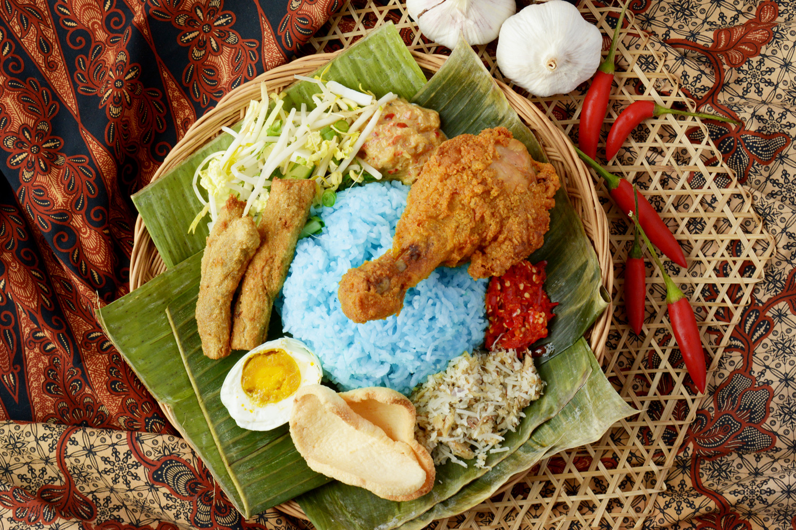

Nasi Kerabu

Description
Nasi kerabu visually strikes you with a dark blue tint to the rice. Other than that, it has the same properties as any other rice dish along with a few spices and condiments.
Despite its deceptively simple appearance, a lot of ingredients go into this dish which makes it a very fulfilling and delicious dish often eaten with grilled beef or savory chicken.
Ingredients
- Basmati rice – one and a half cups
- Water – two and a half ups
- Kaffir lime leaves – four
- Lemongrass – one stalk
- Salt – ½ teaspoon
- Blue food colouring – a couple of drops
- Onion - one medium
- Lemongrass – two stalks
- Desiccated coconut – one and a half cups
- Mackerel – two medium
- Salt – ¼ teaspoon
- Black pepper – few grinds
- Cabbage – two cups (finely shredded).
- Bean sprouts – two cups
- Cucumber – one small (sliced into matchsticks).
- Green beans - ten (julienned)
- Coriander leaves – ½ cup ( finely chopped)
- Fresh mint – two tablespoons (finely chopped).
- Salted eggs
- Sambal
- Spicy Coconut sauce
- Stuffed Chillies
- Ayam Percik
- Spicy fried fish
Steps
- Soak the rice for 20 minutes in water and then run under water until it runs clear.
- Place the rice in a pot
- Add the water, Kaffir lime leaves, salt and lemongrass
- Add the blue colouring
- Bring the water to a gentle simmer.
- Cook until the rice is cooked (15 to 20 minutes).
- Remove the lemongrass and Kafir lime leaves and fluff up the rice with a fork.
- Mix all the ingredients for the Salad together in a bowl.
- Grill the mackerel in a pan until cooked. Allow to cool and then flake
- Place the onion and lemongrass in a grinder. Pulse to a coarse paste
- Add the desiccated coconut to a pan
- Add the mackerel, salt and the paste
- Cook on medium heat for 5 minutes.
- Finish with a few grinds of pepper
- Cut the salted eggs in half
- Place a mound of blue rice in the centre of a plate (use a mould to shape it).
- Surround the rice with salted eggs, salad, coconut floss and stuffed Chillies. Add the Ajam Percikand spicy fried fish(if using).
Place, a spoonful of the Sambal next to the eggs and finally, top the blue rice with a couple of tablespoons of the spicy coconut sauce.